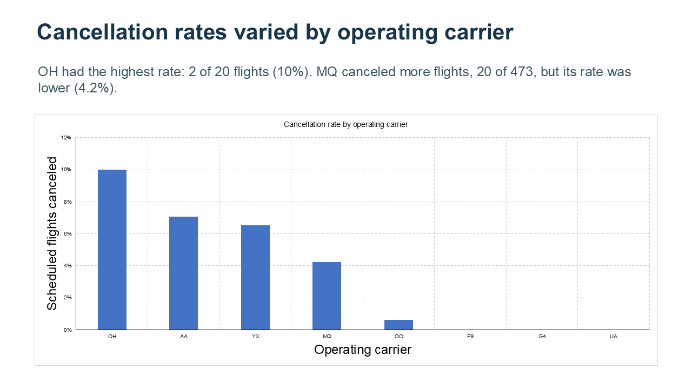
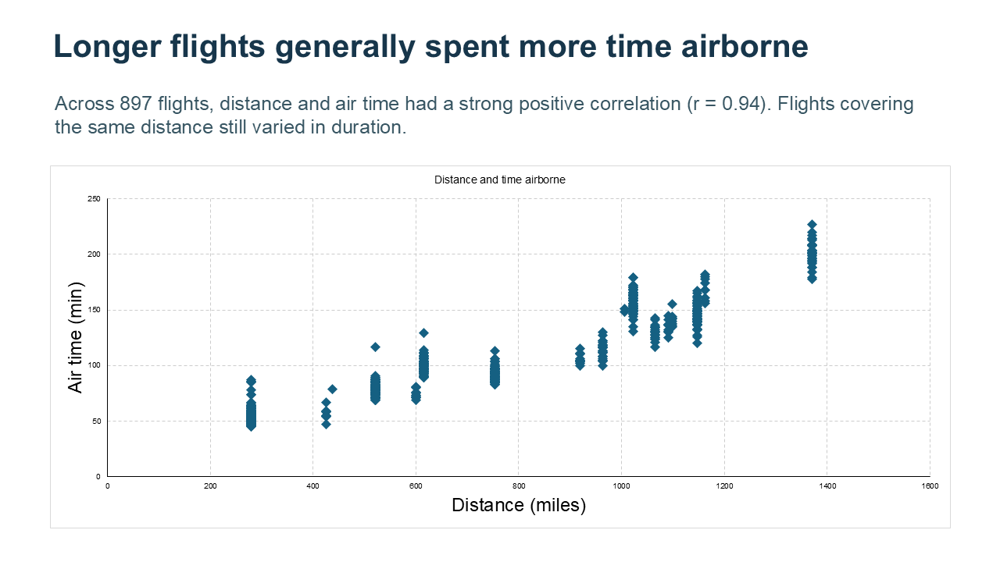

Delays, Cancellations, and Long Hauls: A Month of Flights at XNA
We analyzed 933 scheduled departures from Northwest Arkansas National Airport during January 2025, looking for patterns in delays, cancellations, arrivals, and time in the air.
Team members
About the data set
We used the U.S. Department of Transportation Bureau of Transportation Statistics Reporting Carrier On-Time Performance data. We filtered the data to scheduled departures from Northwest Arkansas National Airport (XNA) during January 2025, giving us 933 flights. Each row describes one flight and includes its date, operating carrier, departure and arrival delays, cancellation status, distance, and time in the air. Some fields are blank for canceled or diverted flights, so the number of flights used differs by question.
Question 1: How did departure delays change from day to day during January?
Why it interested us. XNA is our local airport, and many of us fly from there during winter break. We wanted to see whether delays were spread evenly across the month or concentrated on particular days, perhaps during winter weather.
How we used Excel. On the Plots sheet, we grouped the 898 flights with recorded departure delays by date and used AVERAGEIFS to calculate the mean delay for each of the 31 days. Negative values mean flights left early on average.
How we developed the visual. We used a line chart because these daily averages form a time series, and the line shows how delays rose and fell from one day to the next. The headline states the main finding: the peak was on January 10. The supporting sentence reports the average, about 185 minutes late across 14 flights. A zero line helps readers distinguish days with average early departures from days with average delays.

Question 2: Which airlines canceled the highest share of their flights?
Why it interested us. The airline matters when people book a flight. We wanted to compare how often the carriers operating at XNA canceled their scheduled flights.
How we used Excel. For each operating carrier, we used COUNTIFS to count scheduled departures and cancellations, then divided cancellations by scheduled departures to calculate a rate. The scheduled flight counts were OH 20, AA 99, YX 92, MQ 473, OO 162, F9 4, G4 52, and UA 31.
How we developed the visual. We used a column chart ordered from the highest rate to the lowest so the comparison is easy to scan. Rates make more sense than raw cancellation counts because MQ operated far more flights than the other carriers. OH had the highest rate at 10% (2 of 20), while MQ had the largest number of cancellations at 20 (4.2%). One month of data does not show that a carrier caused the difference.

Question 3: How are arrival delays distributed?
Why it interested us. Airlines often say that most flights are on time. We wanted to check how often arrivals were early and how long the worst delays were.
How we used Excel. We used the 897 flights with recorded arrival delays and the FREQUENCY function to sort them into 60-minute bins. We used COUNTIF to count the early arrivals (575, or 64%) and MAX to find the longest delay (1,810 minutes). Flights without a recorded arrival delay were omitted.
How we developed the visual. A histogram shows the distribution’s shape. We kept empty bins and the single 1,810-minute delay so the long right tail remains visible. Each horizontal-axis label is its bin midpoint; for example, −30 represents delays from −60 to less than 0 minutes. The headline summarizes the pattern: most flights arrived early, but a few were hours late.

Question 4: Is there a relationship between flight distance and time in the air?
Why it interested us. We expected longer flights to take more time, but we wanted to measure how strong the relationship was and see how much flights covering the same distance varied.
How we used Excel. We paired distance in miles with air time in minutes for the 897 flights that had both values, then used CORREL to calculate the Pearson correlation coefficient, r = 0.94. Air time excludes taxiing.
How we developed the visual. A scatter plot is a direct way to show the relationship between two numeric variables, with one point for each flight. Repeated distances form vertical groups, which show that flights covering the same distance still varied in duration. We labeled both axes with units and included the correlation in the slide’s supporting sentence.

Source: U.S. Department of Transportation, Bureau of Transportation Statistics, Reporting Carrier On-Time Performance data. January 2025 scheduled departures from XNA.